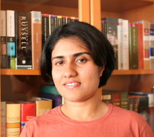

PhD, Princeton University
MS (Quantitative Economics), Indian Statistical Institute, Kolkata
BSc, Presidency College, University of Calcutta
Associate Professor
Department of Economics, York University
4700 Keele St, Toronto ON M3J 1P3, Canada
[CV]
[Departmental Profile]
Email: maitra@yorku.ca
I see development economics as the study of systematic sources of vulnerability, represented by the debilitating conditions to which some households are persistently exposed, across space and time. I study why and how these conditions persist across generations, and whom they affect the most. I derive ways to measure and alleviate the impact of these conditions, by explicitly modelling the economic processes at work behind the data we observe. My research spans the following areas:
* development — poverty, inequality, intergenerational mobility (also health, gender)
* measurement — mixture models, classification methods, asset-based indices
* theory and simulation — overlapping generations, calibrated policy experiments
Stuck at the Bottom: Caste-Based Discrimination, Relative Poverty and the Mechanisms of Intergenerational Opportunity Traps.
Working Paper, May 2026. (A previous version of this paper is co-authored with S. Kundu, Gender at Work & Nayi Disha, Hyderabad, India)
[PDF]
[Data Appendix]
On the Theory and Measurement of Relative Poverty using Durable Ownership Data.
Journal of Economic Behavior and Organization, 225, 153-169, September 2024.
[PDF]
[Technical Appendices]
[Technical Appendix 5]
[Literature Appendix]
[Working Paper, Sep 2021]
To Draw a Relative-Poverty Line: An Approach using Mixture Models and CART.
Working Paper, April 2024.
[PDF]
Mixture Models: Identifying consumption classes in post-liberalization India.
In Applied Econometric Analysis Using Cross Section and Panel Data, D. Mukherjee (ed). Springer, 135-166. December 2023.
[PDF]
Population Dynamics and Marriage Payments: An Analysis of the Long Run Equilibrium in India.
The B.E. Journal of Macroeconomics, 18(2), June 2018.
[PDF]
Class Matters: Tracking Urban Inequality in Post-Liberalization India using a Durables-based Mixture Model.
Applied Economics Letters, 24(17), 1203-1207, October 2017.
[PDF]
The Poor Get Poorer: Tracking Relative Poverty in India using a Durables-based Mixture Model.
Journal of Development Economics, 119, 110-120, 2016.
[PDF]
Who are the Indian Middle Class? A Mixture Model of Class Membership Based on Durables Ownership.
Working Paper, May 2011.
[PDF]
Does Patient Self-Management Explain the Health Gradient? Goldman and Smith (2002) Revisited.
Social Science and Medicine, 70(6), 802-812, March 2010.
Does Parental Education Protect Child Health? Some Evidence from Rural Udaipur.
Book Chapter in Econophysics and Economics of Games, Social Choices and Quantitative Techniques, edited by Banasri Basu, Bikas K. Chakrabarti, Satya R. Chakravarty and Kausik Gangopadhyay, Springer, 2009.
Is Socioeconomic Status Protective of Health? Some Evidence from Rural Udaipur.
Book Chapter in Poverty, Health and Development, edited by Sujit K. Paul, Commonwealth Publishers, New Delhi, 2008.
Dowry and Bride Price.
Book Chapter in International Encyclopedia of the Social Sciences, 2nd Edition, Gale Thompson, 2007.
Population Growth and Marriage Payments: the Short Run Mechanism of a Marriage Squeeze.
Working paper, 2006.